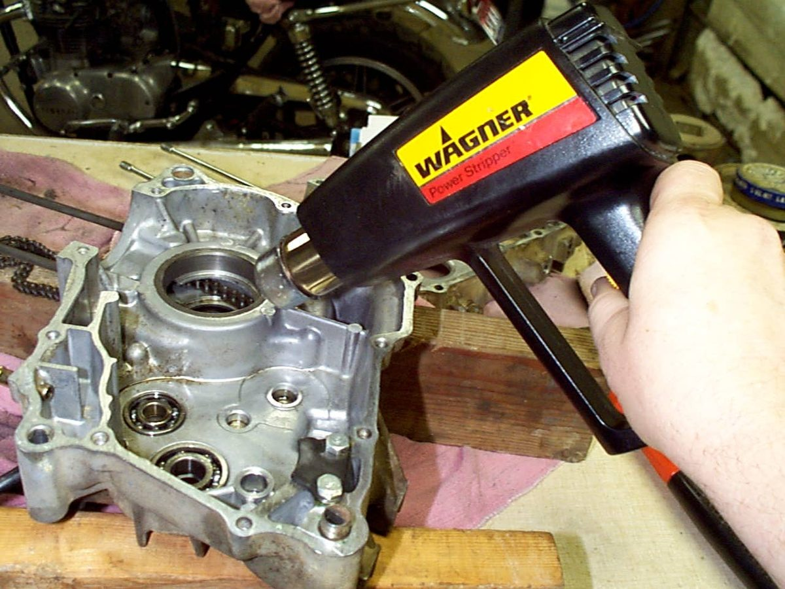

Metal grows when warm and shrinks when cold. Aluminium grows more than steel. Warm an aluminium case and a steel bearing falls loose. Chill the new bearing and it drops in. This needs far less force than hammering.
Safety
- Hot parts burn. Use gloves and tongs. Do not touch a part to test its heat.
- Never heat a sealed part, a part with fuel or oil in it, or a painted part near a flame.
- Keep a torch for the last resort only. Too much heat softens steel (it loses its temper) and warps cases.
- If you use a kitchen oven, take all food out first and ask the owner.
Steps
- Start with the gentlest heat and go up only if needed. A hot air gun is a good first choice. A hair dryer is too weak.
- Heat the whole part, not one spot, and keep the gun moving. Uneven heat can warp a casting.
- A guide for the right heat: a drop of water on the part boils off. Aluminium cases usually release bearings at about that point. An oven lets you reach that heat slowly and evenly.
- Tap the bearing out with a driver that sits on the outer race. See Fit seals and bearings the right way.
- To fit, chill the new bearing in the freezer for an hour or more. Heat the case, then drop the bearing in. Work quickly.
- If a part goes on the outside of another, heat it. If it fits inside another, chill it.
- Only after the oven and hot air gun fail, use a propane torch. A gas welding torch destroys the part, so use it only when you are replacing the part anyway.
Other jobs where temperature matters
- Change engine oil when warm, so it drains and the dirt is mixed in.
- Oil the chain after a ride, when it is warm, so the oil soaks in.
- Check coolant in the overflow bottle when the engine is hot. Open the radiator cap only when cold.
- Check tyre pressure cold. Check valve clearance cold.
- A compression test reads most accurately on a warm engine.
Check your work
- The part is in square and flush, with no damage to the case or the bearing cage.
If it did not fix the problem
- Stuck screw or bolt: Free a stuck fastener.
- Replace a wheel bearing: Replace a wheel bearing.